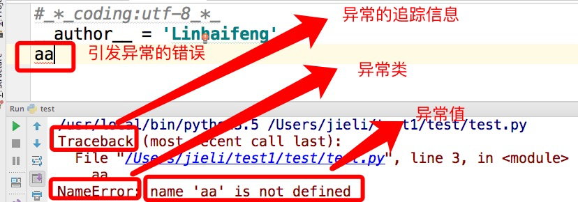
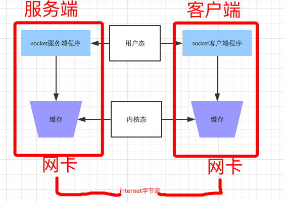
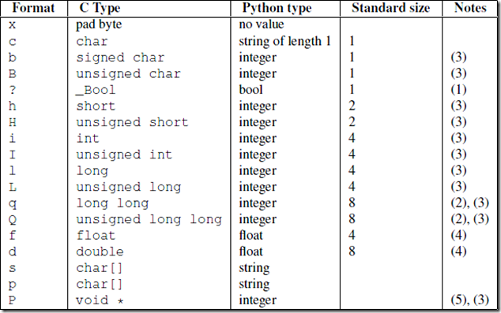

原文连接:https://www.cnblogs.com/bind/p/11511315.html
一、异常处理
异常就是程序运行时发生错误的信号（在程序出现错误时，则会产生一个异常，若程序没有处理它，则会抛出该异常，程序的运行也随之终止），在python中,错误触发的异常如下

而错误分为两种：
1、语法错误
语法错误即为SB错误
2、逻辑错误
逻辑错误有数据类型错误，取值错误等，都是自己逻辑混乱导致。
在python中不同的异常可以用不同的类型（python中统一了类与类型，类型即类）去标识，一个异常标识一种错误
常用异常 1 AttributeError 试图访问一个对象没有的树形，比如foo.x，但是foo没有属性x
2 IOError 输入/输出异常；基本上是无法打开文件
3 ImportError 无法引入模块或包；基本上是路径问题或名称错误
4 IndentationError 语法错误（的子类） ；代码没有正确对齐
5 IndexError 下标索引超出序列边界，比如当x只有三个元素，却试图访问x[5]
6 KeyError 试图访问字典里不存在的键
7 KeyboardInterrupt Ctrl+C被按下
8 NameError 使用一个还未被赋予对象的变量
9 SyntaxError Python代码非法，代码不能编译(个人认为这是语法错误，写错了）
10 TypeError 传入对象类型与要求的不符合
11 UnboundLocalError 试图访问一个还未被设置的局部变量，基本上是由于另有一个同名的全局变量，
12 导致你以为正在访问它
13 ValueError 传入一个调用者不期望的值，即使值的类型是正确的 所以，为了保证程序的健壮性与容错性，即在遇到错误时程序不会崩溃，我们需要对异常进行处理，而错误发生的条件分为两种情况
可预知：
可以用if进行处理：在错误发生之前进行预防
1 AGE=10
2 while True:
3 age=input('>>: ').strip()
4 if age.isdigit(): #只有在age为字符串形式的整数时,下列代码才不会出错,该条件是可预知的
5 age=int(age)
6 if age == AGE:
7 print('you got it')
8 break
不可预知：
当错误发生的条件是不可预知时，需要用到try...except：在错误发生之后进行处理
#基本语法为
try:
被检测的代码块
except 异常类型：
try中一旦检测到异常，就执行这个位置的逻辑
#举例
try:
f=open('a.txt')
g=(line.strip() for line in f)
print(next(g))
print(next(g))
print(next(g))
print(next(g))
print(next(g))
except StopIteration:
f.close()

#1 异常类只能用来处理指定的异常情况，如果非指定异常则无法处理。
s1 = 'hello'
try:
int(s1)
except IndexError as e: # 未捕获到异常，程序直接报错
print e
#2 多分支
s1 = 'hello'
try:
int(s1)
except IndexError as e:
print(e)
except KeyError as e:
print(e)
except ValueError as e:
print(e)
#3 万能异常Exception
s1 = 'hello'
try:
int(s1)
except Exception as e:
print(e)
#4 多分支异常与万能异常
#4.1 如果你想要的效果是，无论出现什么异常，我们统一丢弃，或者使用同一段代码逻辑去处理他们，那么骚年，大胆的去做吧，只有一个Exception就足够了。
#4.2 如果你想要的效果是，对于不同的异常我们需要定制不同的处理逻辑，那就需要用到多分支了。
#5 也可以在多分支后来一个Exception
s1 = 'hello'
try:
int(s1)
except IndexError as e:
print(e)
except KeyError as e:
print(e)
except ValueError as e:
print(e)
except Exception as e:
print(e)
#6 异常的其他机构
s1 = 'hello'
try:
int(s1)
except IndexError as e:
print(e)
except KeyError as e:
print(e)
except ValueError as e:
print(e)
#except Exception as e:
# print(e)
else:
print('try内代码块没有异常则执行我')
finally:
print('无论异常与否,都会执行该模块,通常是进行清理工作')
#7 主动触发异常
try:
raise TypeError('类型错误')
except Exception as e:
print(e)
#8 自定义异常
class EgonException(BaseException):
def __init__(self,msg):
self.msg=msg
def __str__(self):
return self.msg
try:
raise EgonException('类型错误')
except EgonException as e:
print(e)
#9 断言:assert 条件
assert 1 == 1
assert 1 == 2
#10 总结try..except
1：把错误处理和真正的工作分开来
2：代码更易组织，更清晰，复杂的工作任务更容易实现；
3：毫无疑问，更安全了，不至于由于一些小的疏忽而使程序意外崩溃了；只有在错误发生的条件无法预知的情况下，才应该加上try...except，否则会导致代码可读性变差。
二、socket编程
略过网络基础

注：
Socket是应用层与TCP/IP协议族通信的中间软件抽象层，它是一组接口。在设计模式中，Socket其实就是一个门面模式，它把复杂的TCP/IP协议族隐藏在Socket接口后面，对用户来说，一组简单的接口就是全部，让Socket去组织数据，以符合指定的协议。所以，我们无需深入理解tcp/udp协议，socket已经为我们封装好了，我们只需要遵循socket的规定去编程，写出的程序自然就是遵循tcp/udp标准的。
socket工作流程：

socket()模块函数用法
import socket
socket.socket(socket_family,socket_type,protocal=0)
socket_family 可以是 AF_UNIX 或 AF_INET。socket_type 可以是 SOCK_STREAM 或 SOCK_DGRAM。protocol 一般不填,默认值为 0。
获取tcp/ip套接字
tcpSock = socket.socket(socket.AF_INET, socket.SOCK_STREAM)
获取udp/ip套接字
udpSock = socket.socket(socket.AF_INET, socket.SOCK_DGRAM)
由于 socket 模块中有太多的属性。我们在这里破例使用了'from module import *'语句。使用 'from socket import *',我们就把 socket 模块里的所有属性都带到我们的命名空间里了,这样能 大幅减短我们的代码。
例如tcpSock = socket(AF_INET, SOCK_STREAM)服务端套接字函数
s.bind() 绑定(主机,端口号)到套接字
s.listen() 开始TCP监听
s.accept() 被动接受TCP客户的连接,(阻塞式)等待连接的到来
客户端套接字函数
s.connect() 主动初始化TCP服务器连接
s.connect_ex() connect()函数的扩展版本,出错时返回出错码,而不是抛出异常
公共用途的套接字函数
s.recv() 接收TCP数据
s.send() 发送TCP数据(send在待发送数据量大于己端缓存区剩余空间时,数据丢失,不会发完)
s.sendall() 发送完整的TCP数据(本质就是循环调用send,sendall在待发送数据量大于己端缓存区剩余空间时,数据不丢失,循环调用send直到发完)
s.recvfrom() 接收UDP数据
s.sendto() 发送UDP数据
s.getpeername() 连接到当前套接字的远端的地址
s.getsockname() 当前套接字的地址
s.getsockopt() 返回指定套接字的参数
s.setsockopt() 设置指定套接字的参数
s.close() 关闭套接字
面向锁的套接字方法
s.setblocking() 设置套接字的阻塞与非阻塞模式
s.settimeout() 设置阻塞套接字操作的超时时间
s.gettimeout() 得到阻塞套接字操作的超时时间
面向文件的套接字的函数
s.fileno() 套接字的文件描述符
s.makefile() 创建一个与该套接字相关的文件#_*_coding:utf-8_*_
import socket
ip_port=('127.0.0.1',8081)#电话卡
BUFSIZE=1024
s=socket.socket(socket.AF_INET,socket.SOCK_STREAM) #买手机
s.bind(ip_port) #手机插卡
s.listen(5) #手机待机
while True: #接收链接循环,可以不停的接电话
conn,addr=s.accept() #手机接电话
# print(conn)
# print(addr)
print('接到来自%s的电话' %addr[0])
while True: #新增通信循环,可以不断的通信,收发消息
msg=conn.recv(BUFSIZE) #听消息,听话
# if len(msg) == 0:break #如果不加,那么正在链接的客户端突然断开,recv便不再阻塞,死循环发生
print(msg,type(msg))
conn.send(msg.upper()) #发消息,说话
conn.close() #挂电话
s.close() #手机关机
#_*_coding:utf-8_*_
import socket
ip_port=('127.0.0.1',8081)
BUFSIZE=1024
s=socket.socket(socket.AF_INET,socket.SOCK_STREAM)
s.connect_ex(ip_port) #拨电话
while True: #通信循环,客户端可以不断发收消息
msg=input('>>: ').strip()
if len(msg) == 0:continue
s.send(msg.encode('utf-8')) #发消息,说话(只能发送字节类型)
feedback=s.recv(BUFSIZE) #收消息,听话
print(feedback.decode('utf-8'))
s.close() #挂电话
在重启server时可能会遇到 Address already in use,因为重启server时，服务端任然处于TCP四次挥手的time_wait 状态在占用地址。服务器高并发情况下会有大量的time_wait状态的优化方法
解决方法：
1、加入一条socket配置，重用ip和端口
phone=socket(AF_INET,SOCK_STREAM) phone.setsockopt(SOL_SOCKET,SO_REUSEADDR,1) #重用IP和端口，加在bind之前 phone.bind(('127.0.0.1',8080))
2、调整linux内核参数
vi /etc/sysctl.conf 编辑文件，加入以下内容： net.ipv4.tcp_syncookies = 1 net.ipv4.tcp_tw_reuse = 1 net.ipv4.tcp_tw_recycle = 1 net.ipv4.tcp_fin_timeout = 30 然后执行 /sbin/sysctl -p 让参数生效。 net.ipv4.tcp_syncookies = 1 表示开启SYN Cookies。当出现SYN等待队列溢出时，启用cookies来处理，可防范少量SYN攻击，默认为0，表示关闭； net.ipv4.tcp_tw_reuse = 1 表示开启重用。允许将TIME-WAIT sockets重新用于新的TCP连接，默认为0，表示关闭； net.ipv4.tcp_tw_recycle = 1 表示开启TCP连接中TIME-WAIT sockets的快速回收，默认为0，表示关闭。 net.ipv4.tcp_fin_timeout 修改系統默认的 TIMEOUT 时间
基于UDP的套接字
因为udp是无链接的，先启动哪一端都不会报错
####################server
import socket
ip_port=('127.0.0.1',9000)
BUFSIZE=1024
udp_server_client=socket.socket(socket.AF_INET,socket.SOCK_DGRAM)
udp_server_client.bind(ip_port)
while True:
msg,addr=udp_server_client.recvfrom(BUFSIZE)
print(msg,addr)
udp_server_client.sendto(msg.upper(),addr)
####################client
import socket
ip_port=('127.0.0.1',9000)
BUFSIZE=1024
udp_server_client=socket.socket(socket.AF_INET,socket.SOCK_DGRAM)#tcp socket.SOCK_STREAM
while True:
msg=input('>>: ').strip()
if not msg:continue
udp_server_client.sendto(msg.encode('utf-8'),ip_port)
back_msg,addr=udp_server_client.recvfrom(BUFSIZE)
print(back_msg.decode('utf-8'),addr)
UDP 实现 NTP server
##############################server
from socket import *
from time import strftime
ip_port=('127.0.0.1',9000)
bufsize=1024
tcp_server=socket(AF_INET,SOCK_DGRAM)
tcp_server.bind(ip_port)
while True:
msg,addr=tcp_server.recvfrom(bufsize)
print('===>',msg)
if not msg:
time_fmt='%Y-%m-%d %X'
else:
time_fmt=msg.decode('utf-8')
back_msg=strftime(time_fmt)
tcp_server.sendto(back_msg.encode('utf-8'),addr)
tcp_server.close()
###############################client
from socket import *
ip_port=('127.0.0.1',9000)
bufsize=1024
tcp_client=socket(AF_INET,SOCK_DGRAM)
while True:
msg=input('请输入时间格式(例%Y %m %d)>>: ').strip()
tcp_client.sendto(msg.encode('utf-8'),ip_port)
data=tcp_client.recv(bufsize)
print(data.decode('utf-8'))
tcp_client.close()粘包现象
管道：
res=subprocess.Popen(cmd.decode('utf-8'),
shell=True,
stderr=subprocess.PIPE,
stdout=subprocess.PIPE)
的结果的编码是以当前所在的系统为准的，如果是windows，那么res.stdout.read()读出的就是GBK编码的，在接收端需要用GBK解码，且只能从管道里读一次结果
基于tcp先制作一个远程执行命令的程序（1：执行错误命令 2：执行ls 3：执行ifconfig）
from socket import *
import subprocess
ip_port=('127.0.0.1',8080)
BUFSIZE=1024
tcp_socket_server=socket(AF_INET,SOCK_STREAM)
tcp_socket_server.bind(ip_port)
tcp_socket_server.listen(5)
while True:
conn,addr=tcp_socket_server.accept()
print('客户端',addr)
while True:
cmd=conn.recv(BUFSIZE)
if len(cmd) == 0:break
res=subprocess.Popen(cmd.decode('utf-8'),shell=True,
stdout=subprocess.PIPE,
stdin=subprocess.PIPE,
stderr=subprocess.PIPE)
stderr=act_res.stderr.read()
stdout=act_res.stdout.read()
conn.send(stderr)
conn.send(stdout)
import socket
BUFSIZE=1024
ip_port=('127.0.0.1',8080)
s=socket.socket(socket.AF_INET,socket.SOCK_STREAM)
res=s.connect_ex(ip_port)
while True:
msg=input('>>: ').strip()
if len(msg) == 0:continue
if msg == 'quit':break
s.send(msg.encode('utf-8'))
act_res=s.recv(BUFSIZE)
print(act_res.decode('utf-8'),end='')
基于tcp的socket，在运行时会发生粘包
基于udp的socket，在运行时永远不会发生粘包
只有TCP有粘包现象，UDP永远不会粘包
why:
socket收发消息的原理:

发送端可以是一K一K地发送数据，而接收端的应用程序可以两K两K地提走数据，当然也有可能一次提走3K或6K数据，或者一次只提走几个字节的数据，也就是说，应用程序所看到的数据是一个整体，或说是一个流（stream），一条消息有多少字节对应用程序是不可见的，因此TCP协议是面向流的协议，这也是容易出现粘包问题的原因。而UDP是面向消息的协议，每个UDP段都是一条消息，应用程序必须以消息为单位提取数据，不能一次提取任意字节的数据，这一点和TCP是很不同的。怎样定义消息呢？可以认为对方一次性write/send的数据为一个消息，需要明白的是当对方send一条信息的时候，无论底层怎样分段分片，TCP协议层会把构成整条消息的数据段排序完成后才呈现在内核缓冲区。
例如基于tcp的套接字客户端往服务端上传文件，发送时文件内容是按照一段一段的字节流发送的，在接收方看了，根本不知道该文件的字节流从何处开始，在何处结束
所谓粘包问题主要还是因为接收方不知道消息之间的界限，不知道一次性提取多少字节的数据所造成的。
此外，发送方引起的粘包是由TCP协议本身造成的，TCP为提高传输效率，发送方往往要收集到足够多的数据后才发送一个TCP段。若连续几次需要send的数据都很少，通常TCP会根据Nagle优化算法把这些数据合成一个TCP段后一次发送出去，这样接收方就收到了粘包数据。
- TCP（transport control protocol，传输控制协议）是面向连接的，面向流的，提供高可靠性服务。收发两端（客户端和服务器端）都要有一一成对的socket，因此，发送端为了将多个发往接收端的包，更有效的发到对方，使用了优化方法（Nagle算法），将多次间隔较小且数据量小的数据，合并成一个大的数据块，然后进行封包。这样，接收端，就难于分辨出来了，必须提供科学的拆包机制。 即面向流的通信是无消息保护边界的。
- UDP（user datagram protocol，用户数据报协议）是无连接的，面向消息的，提供高效率服务。不会使用块的合并优化算法，, 由于UDP支持的是一对多的模式，所以接收端的skbuff(套接字缓冲区）采用了链式结构来记录每一个到达的UDP包，在每个UDP包中就有了消息头（消息来源地址，端口等信息），这样，对于接收端来说，就容易进行区分处理了。 即面向消息的通信是有消息保护边界的。
- tcp是基于数据流的，于是收发的消息不能为空，这就需要在客户端和服务端都添加空消息的处理机制，防止程序卡住，而udp是基于数据报的，即便是你输入的是空内容（直接回车），那也不是空消息，udp协议会帮你封装上消息头，
udp的recvfrom是阻塞的，一个recvfrom(x)必须对唯一一个sendinto(y),收完了x个字节的数据就算完成,若是y>x数据就丢失，这意味着udp根本不会粘包，但是会丢数据，不可靠
tcp的协议数据不会丢，没有收完包，下次接收，会继续上次继续接收，己端总是在收到ack时才会清除缓冲区内容。数据是可靠的，但是会粘包。
发生粘包的两种情况：
1、发送端需要等缓冲区满才发送出去，造成粘包（发送数据时间间隔很短，数据了很小，会合到一起，产生粘包）
2、接收方不及时接收缓冲区的包，造成多个包接收（客户端发送了一段数据，服务端只收了一小部分，服务端下次再收的时候还是从缓冲区拿上次遗留的数据，产生粘包）
注：
当发送端缓冲区的长度大于网卡的最大数据传输长度MTU时，tcp会将这次发送的数据拆成几个数据包发送出去。
补充一：
tcp在数据传输时，发送端先把数据发送到自己的缓存中，然后协议控制将缓存中的数据发往对端，对端返回一个ack=1，发送端则清理缓存中的数据，对端返回ack=0，则重新发送数据，所以tcp是可靠的
而udp发送数据，对端是不会返回确认信息的，因此不可靠
补充二：
send(字节流)和recv(1024)及sendall含义，
recv里指定的1024意思是从缓存里一次拿出1024个字节的数据
send的字节流是先放入己端缓存，然后由协议控制将缓存内容发往对端，如果待发送的字节流大小大于缓存剩余空间，那么数据丢失，用sendall就会循环调用send，数据不会丢失解决粘包的方法
问题的根源在于，接收端不知道发送端将要传送的字节流的长度，所以解决粘包的方法就是围绕如何让发送端在发送数据前，把自己将要发送的字节流总大小让接收端知晓，然后接收端来一个死循环接收完所有数据。
1、在发送数据之前先判断数据大小，告诉客户端要接收多少数据，通过网络增加一次交互
#######################server
import socket,subprocess
ip_port=('127.0.0.1',8080)
s=socket.socket(socket.AF_INET,socket.SOCK_STREAM)
s.setsockopt(socket.SOL_SOCKET, socket.SO_REUSEADDR, 1)
s.bind(ip_port)
s.listen(5)
while True:
conn,addr=s.accept()
print('客户端',addr)
while True:
msg=conn.recv(1024)
if not msg:break
res=subprocess.Popen(msg.decode('utf-8'),shell=True,\
stdin=subprocess.PIPE,\
stderr=subprocess.PIPE,\
stdout=subprocess.PIPE)
err=res.stderr.read()
if err:
ret=err
else:
ret=res.stdout.read()
data_length=len(ret)
conn.send(str(data_length).encode('utf-8'))
data=conn.recv(1024).decode('utf-8')
if data == 'recv_ready':
conn.sendall(ret)
conn.close()
###################################client
import socket,time
s=socket.socket(socket.AF_INET,socket.SOCK_STREAM)
res=s.connect_ex(('127.0.0.1',8080))
while True:
msg=input('>>: ').strip()
if len(msg) == 0:continue
if msg == 'quit':break
s.send(msg.encode('utf-8'))
length=int(s.recv(1024).decode('utf-8'))
s.send('recv_ready'.encode('utf-8'))
send_size=0
recv_size=0
data=b''
while recv_size < length:
data+=s.recv(1024)
recv_size+=len(data)
print(data.decode('utf-8'))缺点：程序的运行速度远快于网络传输速度，所以在发送一段字节前，先用send去发送该字节流长度，这种方式会放大网络延迟带来的性能损耗
2、为字节流加上自定义固定长度报头，报头中包含字节流长度，然后一次send到对端，对端在接收时，先从缓存中取出定长的报头，然后再取真实数据
struct模块
该模块可以把一个类型，如数字，转成固定长度的bytes

import json,struct
#假设通过客户端上传1T:1073741824000的文件a.txt
#为避免粘包,必须自定制报头
header={'file_size':1073741824000,'file_name':'/a/b/c/d/e/a.txt','md5':'8f6fbf8347faa4924a76856701edb0f3'} #1T数据,文件路径和md5值
#为了该报头能传送,需要序列化并且转为bytes
head_bytes=bytes(json.dumps(header),encoding='utf-8') #序列化并转成bytes,用于传输
#为了让客户端知道报头的长度,用struck将报头长度这个数字转成固定长度:4个字节
head_len_bytes=struct.pack('i',len(head_bytes)) #这4个字节里只包含了一个数字,该数字是报头的长度
#客户端开始发送
conn.send(head_len_bytes) #先发报头的长度,4个bytes
conn.send(head_bytes) #再发报头的字节格式
conn.sendall(文件内容) #然后发真实内容的字节格式
#服务端开始接收
head_len_bytes=s.recv(4) #先收报头4个bytes,得到报头长度的字节格式
x=struct.unpack('i',head_len_bytes)[0] #提取报头的长度
head_bytes=s.recv(x) #按照报头长度x,收取报头的bytes格式
header=json.loads(json.dumps(header)) #提取报头
#最后根据报头的内容提取真实的数据,比如
real_data_len=s.recv(header['file_size'])
s.recv(real_data_len)我们可以把报头做成字典，字典里包含将要发送的真实数据的详细信息，然后json序列化，然后用struck将序列化后的数据长度打包成4个字节
发送时：
先发报头长度
再编码报头内容然后发送
最后发真实内容
接收时：
先手报头长度，用struct取出来
根据取出的长度收取报头内容，然后解码，反序列化
从反序列化的结果中取出待取数据的详细信息，然后去取真实的数据内容
import socket,struct,json
import subprocess
phone=socket.socket(socket.AF_INET,socket.SOCK_STREAM)
phone.setsockopt(socket.SOL_SOCKET,socket.SO_REUSEADDR,1) #就是它，在bind前加
phone.bind(('127.0.0.1',8080))
phone.listen(5)
while True:
conn,addr=phone.accept()
while True:
cmd=conn.recv(1024)
if not cmd:break
print('cmd: %s' %cmd)
res=subprocess.Popen(cmd.decode('utf-8'),
shell=True,
stdout=subprocess.PIPE,
stderr=subprocess.PIPE)
err=res.stderr.read()
print(err)
if err:
back_msg=err
else:
back_msg=res.stdout.read()
headers={'data_size':len(back_msg)}
head_json=json.dumps(headers)
head_json_bytes=bytes(head_json,encoding='utf-8')
conn.send(struct.pack('i',len(head_json_bytes))) #先发报头的长度
conn.send(head_json_bytes) #再发报头
conn.sendall(back_msg) #在发真实的内容
conn.close()
服务端：定制稍微复杂一点的报头from socket import *
import struct,json
ip_port=('127.0.0.1',8080)
client=socket(AF_INET,SOCK_STREAM)
client.connect(ip_port)
while True:
cmd=input('>>: ')
if not cmd:continue
client.send(bytes(cmd,encoding='utf-8'))
head=client.recv(4)
head_json_len=struct.unpack('i',head)[0]
head_json=json.loads(client.recv(head_json_len).decode('utf-8'))
data_len=head_json['data_size']
recv_size=0
recv_data=b''
while recv_size < data_len:
recv_data+=client.recv(1024)
recv_size+=len(recv_data)
print(recv_data.decode('utf-8'))
#print(recv_data.decode('gbk')) #windows默认gbk编码
认证客户端的链接合法性
from socket import *
import hmac,os
secret_key=b'linhaifeng bang bang bang'
def conn_auth(conn):
'''
认证客户端链接
:param conn:
:return:
'''
print('开始验证新链接的合法性')
msg=os.urandom(32)
conn.sendall(msg)
h=hmac.new(secret_key,msg)
digest=h.digest()
respone=conn.recv(len(digest))
return hmac.compare_digest(respone,digest)
def data_handler(conn,bufsize=1024):
if not conn_auth(conn):
print('该链接不合法,关闭')
conn.close()
return
print('链接合法,开始通信')
while True:
data=conn.recv(bufsize)
if not data:break
conn.sendall(data.upper())
def server_handler(ip_port,bufsize,backlog=5):
'''
只处理链接
:param ip_port:
:return:
'''
tcp_socket_server=socket(AF_INET,SOCK_STREAM)
tcp_socket_server.bind(ip_port)
tcp_socket_server.listen(backlog)
while True:
conn,addr=tcp_socket_server.accept()
print('新连接[%s:%s]' %(addr[0],addr[1]))
data_handler(conn,bufsize)
if __name__ == '__main__':
ip_port=('127.0.0.1',9999)
bufsize=1024
server_handler(ip_port,bufsize)
from socket import *
import hmac,os
secret_key=b'linhaifeng bang bang bang'
def conn_auth(conn):
'''
验证客户端到服务器的链接
:param conn:
:return:
'''
msg=conn.recv(32)
h=hmac.new(secret_key,msg)
digest=h.digest()
conn.sendall(digest)
def client_handler(ip_port,bufsize=1024):
tcp_socket_client=socket(AF_INET,SOCK_STREAM)
tcp_socket_client.connect(ip_port)
conn_auth(tcp_socket_client)
while True:
data=input('>>: ').strip()
if not data:continue
if data == 'quit':break
tcp_socket_client.sendall(data.encode('utf-8'))
respone=tcp_socket_client.recv(bufsize)
print(respone.decode('utf-8'))
tcp_socket_client.close()
if __name__ == '__main__':
ip_port=('127.0.0.1',9999)
bufsize=1024
client_handler(ip_port,bufsize)
三、socketserver实现并发
基于tcp的套接字，关键就是两个循环，
一个链接循环，
一个通信循环
socketserver模块中分两大类：
server类（解决链接问题）
request类（解决通信问题）
server类
request类继承关系:
分析socketserver源码：
ftpserver=socketserver.ThreadingTCPServer(('127.0.0.1',8080),FtpServer)
ftpserver.serve_forever()查找属性的顺序：ThreadingTCPServer->ThreadingMixIn->TCPServer->BaseServer
- 实例化得到ftpserver，先找类ThreadingTCPServer的__init__,在TCPServer中找到，进而执行server_bind,server_active
- 找ftpserver下的serve_forever,在BaseServer中找到，进而执行self._handle_request_noblock()，该方法同样是在BaseServer中
- 执行self._handle_request_noblock()进而执行request, client_address = self.get_request()（就是TCPServer中的self.socket.accept()），然后执行self.process_request(request, client_address)
- 在ThreadingMixIn中找到process_request，开启多线程应对并发，进而执行process_request_thread，执行self.finish_request(request, client_address)
- 上述四部分完成了链接循环，本部分开始进入处理通讯部分，在BaseServer中找到finish_request,触发我们自己定义的类的实例化，去找__init__方法，而我们自己定义的类没有该方法，则去它的父类也就是BaseRequestHandler中找....
源码分析总结：
基于tcp的socketserver我们自己定义的类中的
- self.server即套接字对象
- self.request即一个链接
- self.client_address即客户端地址
基于udp的socketserver我们自己定义的类中的
- self.request是一个元组（第一个元素是客户端发来的数据，第二部分是服务端的udp套接字对象），如(b'adsf', <socket.socket fd=200, family=AddressFamily.AF_INET, type=SocketKind.SOCK_DGRAM, proto=0, laddr=('127.0.0.1', 8080)>)
- self.client_address即客户端地址
import subprocess
import struct
import socketserver
class Myserver(socketserver.BaseRequestHandler):
def handle(self):
print('coon is',self.request) #con
print('addr is',self.client_address) #addr
buffer_size = 1024
while True:
try:
#收消息
data=self.request.recv(buffer_size)
if not data:break
print('客户端收到的消息是，',data)
# 执行命令，得到命令的结果cmd_res
res = subprocess.Popen(cmd.decode('utf-8'), shell=True,
stderr=subprocess.PIPE,
stdout=subprocess.PIPE,
stdin=subprocess.PIPE)
err = res.stderr.read()
if err:
cmd_res = err
else:
cmd_res = res.stdout.read()
if not cmd_res:
cmd_res = '执行成功'.encode('utf-8')
length = len(cmd_res)
data_length = struct.pack('i', length)
self.request.send(data_length)
self.request.send(cmd_res)
# low 版 解决粘包
# conn.send(str(length).encode('utf-8'))
# client_ready=conn.recv(buffer_size)
#
# if client_ready==b'ready':
# conn.send(cmd_res)
except Exception as e:
print(e)
break
if __name__=='__main__':
s=socketserver.ThreadingTCPServer(('127.0.0.1',8080),Myserver)
s.serve_forever()import socketserver
class Myserver(socketserver.BaseRequestHandler):
def handle(self):
print('coon is',self.request) #connect
print('addr is',self.client_address) #addr
while True:
try:
#收消息
data=self.request.recv(1024)
if not data:break
print('客户端收到的消息是，',data)
#发消息
self.request.sendall(data.upper())
except Exception as e:
print(e)
break
if __name__=='__main__':
s=socketserver.ThreadingTCPServer(('127.0.0.1',8080),Myserver)
s.serve_forever()